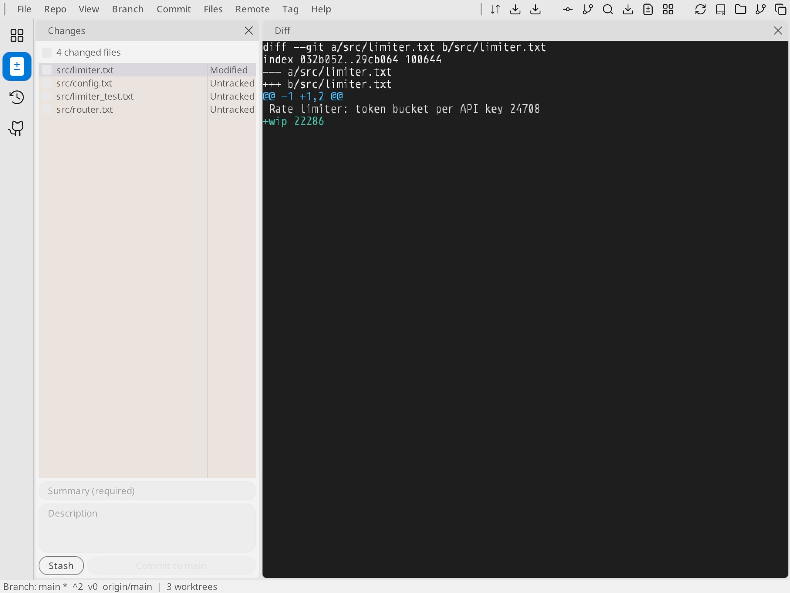
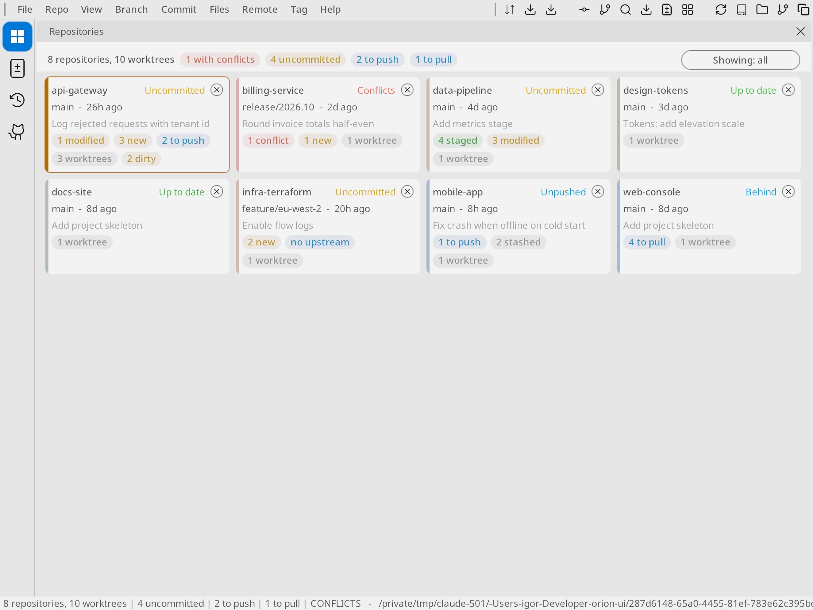
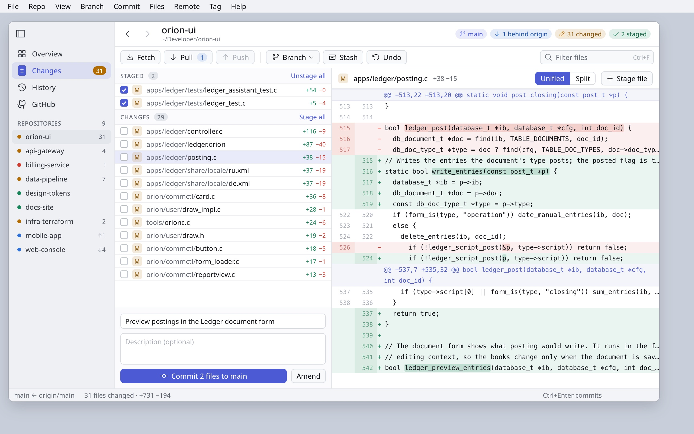
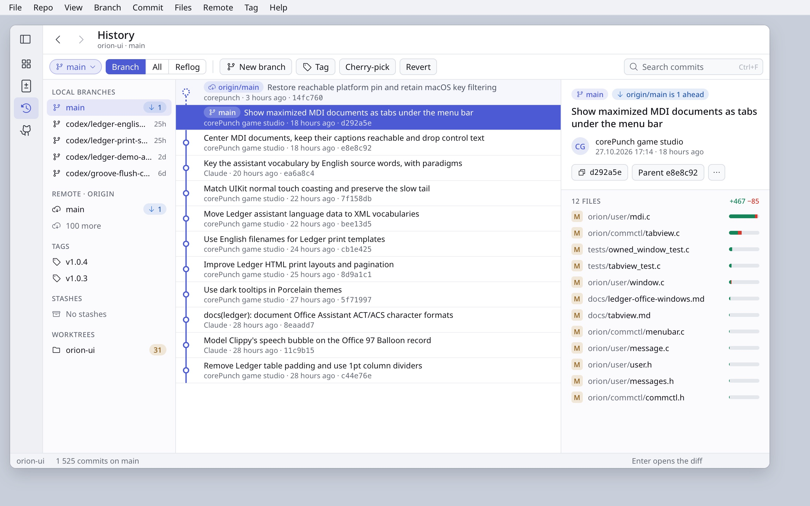
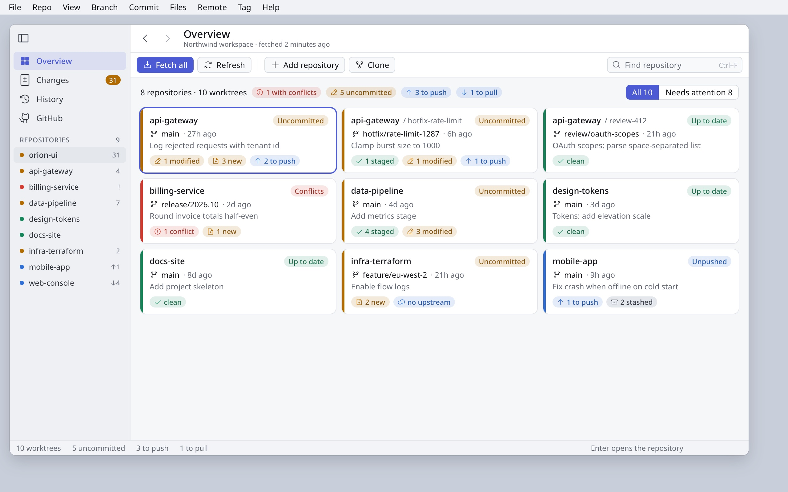
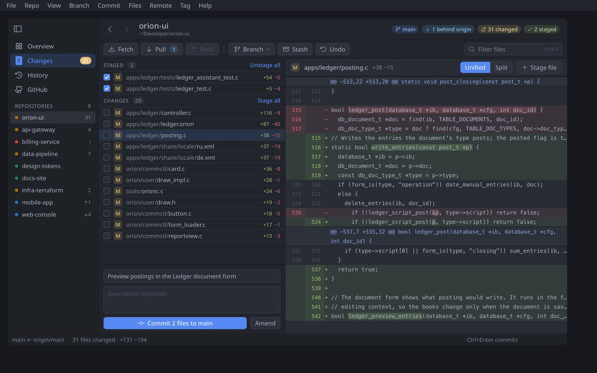

Gitclient: four redesign concepts
Gitclient gets the same treatment as Ledger, so both apps read as one Orion family: a section sidebar, a title row that states where you are, a command bar with words, status badges, quiet selection in tables without focus, and a calm dark palette. The concepts use this repository's real state: main, one commit behind origin/main, 31 changed files and the real diff from the Ledger work.
Where Gitclient is today


Fifteen unlabelled icons in the menu barTwo identical download arrows, a magnifier and several branch glyphs, with no grouping and no primary action.
Pane chrome everywhereEvery pane has its own title and close button ("Changes ×", "Diff ×"), which repeats what the sidebar already says.
Status as words in a column"Untracked" and "Modified" take a column. The list has no staged/unstaged split and no line counts.
A terminal in a light appThe diff is a black block with the raw
diff --git header, no line numbers and no tinted rows.An unclear commit button"Commit to main" is pale even when there is something to commit, and says nothing about how many files go in.
A cryptic status bar"Branch: main * ^2 v0 origin/main" packs three facts into symbols.
Concept 1
Changes: staged and unstaged, a readable diff, a commit that says what it does

posting.c.What changes
- The title row names the repository and states its position as badges: branch, 1 behind origin, 31 changed, 2 staged.
- Files are grouped Staged / Changes with Stage all and Unstage all. Each row shows a status letter badge and +/− counts.
- The diff is themed: line-number gutters, tinted added and removed rows, word-level highlights and hunk headers as quiet bars. Unified and Split are offered.
- The primary button says Commit 2 files to main, with Amend beside it.
Why
- GitHub Desktop, Fork, Tower and VS Code all split staged from unstaged, because staging is the decision the page exists for.
- A button that states its effect avoids empty or wrong commits.
- A light diff in a light app removes the glare jump, and the gutters make code review possible.
Orion work
- Grouped sections in TableView (a section header row with an action).
- DiffView: gutters, tinted rows and intra-line highlights from theme roles.
- Status letter badges as a
draw_status_badgevariant.
Concept 2
History: one branch tree, a graph with refs, and a commit inspector

What changes
- Branches, remotes, tags, stashes and worktrees become one sectioned list, replacing four stacked tables.
- Commits are two-line rows on a graph lane, with refs as badges. Incoming commits from origin are shown dashed until you pull.
- The right inspector shows the message, author, copyable hash, parent and the changed files with size bars.
- Branch, All and Reflog sit in one segmented control.
Why
- The same inspector pattern as Ledger's preview pane: read without opening.
- Fork and Tower show refs on the graph; Sublime Merge shows file size bars in the commit view.
Orion work
- A sectioned source list (a TableView or ColumnView with group rows).
- Graph lanes as a TableView cell renderer.
- An inspector split pane with a remembered width.
Concept 3
Overview: status badges with icons and a clear filter

What changes
- Every badge is the Orion status badge: an icon plus a word in a tinted pill, with the card's stripe kept.
- "Showing: all" becomes a segmented All / Needs attention control.
- Per-card close buttons move to the context menu.
- Fetch all is the primary command.
Why
- Icons make the state readable without colour: an arrow for push/pull, a pencil for modified, a warning for conflicts.
- One way to show status across Ledger and Gitclient.
Orion work
- Done: Badge with icon, pill and tone (this session).
- A Segmented control bound to a filter.
Concept 4
Porcelain Dark in One Dark colours

What changes
- Charcoal faces with editor-grey wells, blue-grey ink and muted status hues, with no white-on-black glare.
- The diff and badges use the same tones as Atom's One Dark syntax theme.
Why
- Developers already know these colours from their editor, so the app sits beside it without contrast shock.
Orion work
- Done: Porcelain Dark palette retuned, and text shadow made a theme setting (this session).